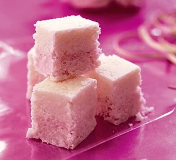

Coconut ice recipe

Description
We are once again using a BBC good food recipe for this one
Only 3 steps yay
Ingredients
- 250g sweetened condensed milk
- 250g icing sugar sifted, plus extra for dusting
- 200g dessicated coconut
- pink edible food colouring
Method
- Using a wooden spoon, mix together the condensed milk and icing sugar in a large bowl. It will get very stiff. Work the coconut into the mix until it’s well combined – use your hands, if you like.
- Split the mix into two and knead a very small amount of food colouring into one half. Dust a board with icing sugar, then shape each half into a smooth rectangle and place one on top of the other. Roll with a rolling pin, re-shaping with your hands every couple of rolls, until you have a rectangle of two-tone coconut ice about 3cm thick.
- Transfer to a plate or board and leave uncovered for at least 3 hrs or ideally overnight to set. Cut into squares with a sharp knife and pack into bags or boxes. These will keep for up to a month at least, if stored in an airtight container.
Homepage